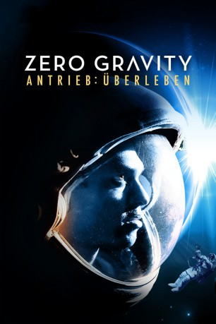

#10444 Zero Gravity - Antrieb Überleben
Alternativ: Astronaut: The Last Push (Englischer Titel)
 
 IMDB-Wertung: 5.4 / 10
IMDB-Wertung: 5.4 / 10  Metascore: 0
Metascore: 0 
Neueste Erkenntnisse lassen vermuten, dass Leben auf dem Jupitermond Europa gedeiht. Mit einer Weltraummission möchte der Abenteurer und Geldgeber Walter Moffitt sich selbst und der Welt den Beweis dafür erbringen. Die beiden Astronauten Michael Forrest und Nathan Miller nehmen die Herausforderung an und bilden das Team für die 12-jährige Mission ins All!
Jahr: 2012
Dauer: 84 Minuten
FSK: 12
Land: USA Studio: Amazing D.C.Tonspuren: DTS - ,
Untertitel:
Auflösung: 1080p (1920x816) Größe: 3993 MB
Genre: Drama, Sci-Fi
Regisseur: Eric Hayden
Drehbuch: Eric Hayden
Soundtrack: Kimberly Hayden
Darsteller:
 Khary Payton als Michael Forrest
Khary Payton als Michael Forrest Lance Henriksen als Walter Moffitt
Lance Henriksen als Walter Moffitt Brian Baumgartner als Bob Jansen
Brian Baumgartner als Bob Jansen James Madio als Nathan Miller
James Madio als Nathan Miller Tom Woodruff Jr. als Control Technician
Tom Woodruff Jr. als Control Technician- Lira Angel als Teacher
- Sachiyo K als Japanese Ambassador
- Alec Gillis als Charlie
- Laurent Meurette als Mountain Biker 1
- Pascal Lamontagne als Mountain Biker 2
- Druid Altura als Child from the Philippines
- Irwin Altura als Father from the Philippines
- Mila Altura als Mother from the Philippines
- Avery Golden als Boy from Nebraska
- Arabella Hayden als Student
- Gavin Hayden als Student
- Griffin Jahr als Student
- Spencer Jahr als Student
- Sano Karamanga als Child from Rwanda
- Tai Wah Lim als Man from China
- Katelyn Magallon als Student
- Ella Pratt als Student
- Sadie Pratt als Student
- Alex Quick als Child from Lithuania
- Andrew Quick als Child from Lithuania
- Angele Quick als Mother from Lithuania
- Kelly Quick als Father from Lithuania
- Kyle Quick als
- Emily Scott als Student
- Anette Umilinga als Mother from Rwanda
- Garth Winkless als Man from Scotland
Datei: X:\2012(N-Z)\Zero Gravity - Antrieb Überleben (2012, FSK12, 1920x816).mkv seit 07.01.2019
Festplatte: HD 2012(N-Z)-2013(A-H)
 Es gibt insgesamt 138 Filme in der Gruppe '2012(N-Z)'
Es gibt insgesamt 138 Filme in der Gruppe '2012(N-Z)'